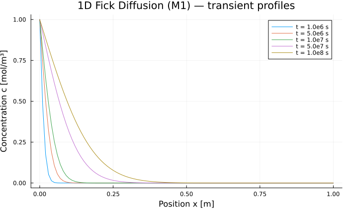

1D Fick Diffusion (M1)
Source:
examples/M1_diffusion/run.jlReference solution: M1 — solute diffusion in a saturated porous medium.
Physical problem
We simulate the diffusion of a solute in a saturated soil column. The concentration $c$ [mol/m³] is the unknown.
PDE:
\[\varphi \frac{\partial c}{\partial t} = \nabla \cdot \left(D \varphi \, \nabla c\right)\]
Porosity $\varphi$ cancels out and the equation reduces to a pure diffusion equation:
\[\frac{\partial c}{\partial t} = D \, \frac{\partial^2 c}{\partial x^2}\]
Boundary conditions:
| Boundary | Condition |
|---|---|
| $x = 0$ (inlet) | Dirichlet $c = c_\text{in}$ |
| $x = L$ (outlet) | Zero Neumann $\partial c / \partial x = 0$ (VoronoiFVM default) |
Initial condition: $c(x, 0) = 0$, with $c(0, 0) = c_\text{in}$ for IC/BC consistency.
Reference solution (semi-infinite domain):
\[c(x, t) = c_\text{in} \operatorname{erfc}\!\left(\frac{x}{2\sqrt{D t}}\right)\]
This approximation is valid as long as the diffusion front $2\sqrt{Dt}$ remains small compared to $L$.
Parameters
| Symbol | Value | Unit | Description |
|---|---|---|---|
| $\varphi$ | $0.30$ | — | Porosity |
| $D$ | $10^{-10}$ | m²/s | Effective diffusion coefficient |
| $c_\text{in}$ | $1.0$ | mol/m³ | Concentration imposed at the inlet |
| $L$ | $1.0$ | m | Column length |
Characteristic diffusion time:
\[t_\text{diff} = \frac{L^2}{D} = 10^{10} \text{ s}\]
The simulation covers $t_\text{end} = 10^8$ s $= t_\text{diff}/100$: early transient regime, the front penetrates only about $2\sqrt{D t_\text{end}} \approx 0.2$ m.
PoroMechanics.jl implementation
Model definition
using PoroMechanics
using VoronoiFVM
using ExtendableGrids
using Plots
using Printf
using SpecialFunctions
Base.@kwdef struct M1Model <: AbstractPoroModel
φ :: Float64 = 0.30 # porosity [-]
D :: Float64 = 1e-10 # effective diffusion coefficient [m²/s]
c_in :: Float64 = 1.0 # concentration imposed at x=0 [mol/m³]
L :: Float64 = 1.0 # column length [m]
end
PoroMechanics.nspecies(::M1Model) = 1
PoroMechanics.species_names(::M1Model) = [:c]VoronoiFVM callbacks
# Fick flux: f = D φ (c₁ − c₂)
function PoroMechanics.flux!(f, u, ::Any, m::M1Model, ::Any)
f[1] = m.D * m.φ * (u[1, 1] - u[1, 2])
end
# Storage term: φ · c
function PoroMechanics.storage!(f, u, ::Any, m::M1Model, ::Any)
f[1] = m.φ * u[1]
end
# Dirichlet condition at x = 0 (region 1)
# The boundary x = L (region 2) does nothing → zero Neumann by default
function PoroMechanics.bcondition!(f, u, bnode, m::M1Model, ::Any)
boundary_dirichlet!(f, u, bnode; species = 1, region = 1, value = m.c_in)
endSimulation
m = M1Model()
t_diff = m.L^2 / m.D # characteristic time [s]
t_end = t_diff / 100 # 1e8 s — transient regime
grid = simplexgrid(range(0.0, m.L; length = 101))
_flux!(f, u, edge, data) = PoroMechanics.flux!(f, u, edge, m, data)
_storage!(f, u, node, data) = PoroMechanics.storage!(f, u, node, m, data)
_bcondition!(f, u, bnode, data) = PoroMechanics.bcondition!(f, u, bnode, m, data)
sys = VoronoiFVM.System(grid;
flux = _flux!,
storage = _storage!,
bcondition = _bcondition!,
species = [1])
# IC consistent with the Dirichlet BC at x = 0 (avoids time-step divergence)
inival = unknowns(sys; inival = 0.0)
inival[1, 1] = m.c_in
ctrl = VoronoiFVM.SolverControl(;
Δt = t_end / 1e4,
Δt_max = t_end / 10,
Δu_opt = 0.1,
handle_exceptions = true,
verbose = false,
)
tsol = solve(sys; inival, times = (0.0, t_end), control = ctrl)
@printf("Time steps taken: %d\n", length(tsol.t) - 1)Time steps taken: 43Results
Concentration profiles over time
xcoords = grid[Coordinates][1, :]
p = plot(;
xlabel = "Position x [m]",
ylabel = "Concentration c [mol/m³]",
title = "1D Fick Diffusion (M1) — transient profiles",
legend = :topright,
size = (700, 420))
fracs = [0.01, 0.05, 0.1, 0.5, 1.0]
for frac in fracs
t_req = frac * t_end
it = argmin(abs.(tsol.t .- t_req))
plot!(p, xcoords, tsol[1, :, it];
label = "t = $(round(t_req; sigdigits=2)) s")
end
p
Comparison with the analytical solution (semi-infinite)
t_ref = tsol.t[end]
c_num = tsol[1, :, end]
c_ref = m.c_in .* erfc.(xcoords ./ (2 * sqrt(m.D * t_ref)))
err_L2 = sqrt(sum((c_num .- c_ref) .^ 2) / 100)
err_Linf = maximum(abs.(c_num .- c_ref))
@printf("L2 error : %.2e mol/m³\n", err_L2)
@printf("L∞ error : %.2e mol/m³\n", err_Linf)
err_Linf < 0.01 * m.c_in ? println("✓ err < 1 %") : println("✗ err > 1 %")L2 error : 3.38e-03 mol/m³
L∞ error : 9.74e-03 mol/m³
✓ err < 1 %Key points
- Package reference model — Fick diffusion is the simplest case of transport in porous media: a single species, linear equation, known analytical solution. Ideal for validating the
AbstractPoroModel→ closures → VoronoiFVM chain. - IC/BC consistency — the initial condition must satisfy the Dirichlet BC at node
x=0fromt=0(inival[1,1] = c_in). Without this, the adaptive controller seesΔu = c_inregardless ofΔtand reduces the time step indefinitely untilΔt_min. - Implicit zero Neumann — VoronoiFVM applies zero flux by default on any boundary not handled in
bcondition!: it is not necessary to explicitly callboundary_neumann!for thex=Lboundary. Δu_opt— set to0.1 mol/m³(10 % ofc_in): VoronoiFVM adaptsΔtso that the maximum concentration variation per step stays below this threshold.